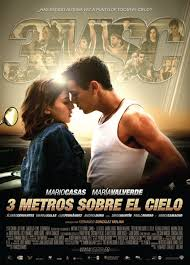

.jpg)
Es una pelicula de romance y drama,Baby es una chica de clase media una chica tranquila, educada con un novio que la trata mal le apodaban "chico"
sin embargo Hugo es un chico que le encanta la adrenalina,le gusta tomarbebidas alcoholicas, participar en las carreras de motos
pero un dia por cosa de el destino se encuentran, Hugo por primera vez se habia enamorado y fue de Baby. Un dia Hugo estaba concursando
contra otros chicos para ver quien tenia mas fuerzas y gano Hugo de hay se fueronel y su amigo "pollo" a una fiesta sin ser invitados ay volvio a
enconttrar a Baby y tambien se dio cuenta que Baby tenia novio pero que la trataba muy mal Hugo la defendio y por lo mismo
"chico"y Hugo se pelearon Baby no supo que aser pero al poco rato llego la policia,"chico" y Baby salieron juntos de hay
Hugo no se quedo tranquilo y fue atras de ellos entonses los alcanzo y se empezaron a golpear una vez mas pero esta vez otras personas los pudieron separa
el novio de Baby se enfuresio y dejo a Baby ay entonses Hugo le propuso que el la llevaria a su casa ella acepto asi se fueron
conociendo cada vez mas gracias ala amiga de Baby Catina y el amigo de Hugo
"pollo" Baby se fue enamorando cada vez mas de el pero como siempre tiene que aver alguien que se interponga esta vez es una chica que no los queria ver juntos
un dia que Baby se enojo con Hugo ella aprovecho para que ya no se vieran pero Hugo no dejoe insistir asi quele cayo de sorpresa a Baby que Hugo fuera a
verla el dia de su cumpleaños ese mismo dia Catina Y "pollo" se accidentaron Hugo se puso furioso y le dio una bofetada a Baby ella no quiso saber nada mas de el.
Genero: romantica.
Clasificacion: B
Fecha de estreno: 3 de diciembre 2010 (españa)

.jpg)
Cuando la madre de Bella Swan empieza a viajar con su nuevo marido, la joven de 17 años no tiene más remedio que
abandonar su hogar en Phoenix y volver a vivir con su padre en la minúscula localidad de Forks, en el estado de Washington.
Tras el incesante sol de Arizona, el brumoso clima gris de Forks resulta bastante exótico para Bella, al igual que sus nuevos compañeros de clase, la familia Cullen.
Increíblemente atractivos y sumamente reservados,no se parecen a nadie que haya conocido, en más sentidos de lo que imagina.
Los Cullen son una familia de bebedores de sangre inmortales. Durante décadas, siglos para algunos, se han autoimpuesto la disciplina
de consumir únicamente sangre animal, lo que los convierte en el equivalente
a los "vegetarianos" del mundo de los vampiros. Se ocultan bajo el nublado cielo de la península de Olympic, llevando una vida
lo más normal posible, apartados de los demás, para proteger su secreto.
Bella siente especial fascinación por Edward Cullenpero su nuevo compañero de clase guarda las distancias. En realidad,
la atracción que siente por ella es abrumadora y teme que su autocontrol
no baste para dominar sus instintos vampíricos. Bella es el alma gemela que lleva 90 años buscando, pero su olor amenaza
con sumirlo en un frenesí irrefrenable por alimentarse.
Incapaz de resistirse a pasar tiempo con Bella, Edward le desvela su secreto con la esperanza de ahuyentarla, pero solo consigue que la adolescente quede más prendada de él.
Pronto, la joven pareja resulta inseparable y la lucha interna de Edward se intensifica ante el devorador deseo de Bella de convertirse en uno de ellos.
A medida que Bella descubre el mundo de Edward, se lanza de cabeza a un emocionante y aterrador romance, que llama la atención de un grupo de vampiros nómadas
que no tienen los mismos escrúpulos que los Cullen sobre la sangre humana y deciden convertirla en su próxima víctima.
Género: romantica.
Clasificación: B
Fecha de estreno: 16 de Diciembre 2013
.jpg)
En La Saga Crepúsculo: Eclipse, tercera entrega de la serie de descomunal éxito de Stephenie Meyer,
Bella Swan vuelve a encontrarse rodeada de peligros, mientras Seattle se ve asolada por una oleada
de misteriosos asesinatos y una maliciosa vampira prosigue su búsqueda de venganza. En medio de todo eso, Bella se ve obligada a elegir
entre su amor por Edward Cullen y su amistad con Jacob Black ,
perfectamente consciente de que su decisión tiene muchas posibilidades de exacerbar la eterna rivalidad entre vampiros y hombres lobo.
Con su graduación cada vez más próxima, Bella no tiene más remedio que afrontar la decisión más importante de su vida.
Mientras que la mayoría de sus amigos del instituto están recibiendo cartas de aceptación en
las distintas universidades y enviando avisos de graduación, Bella se encuentra tomando una decisión que le permitiría estar con su
amado Edward para siempre. Pero le cuesta aceptar la condición impuesta por Edward (debe casarse con él antes de que él acepte ser quien
la convierta en vampiro) y las consecuencias que estas elecciones pueden traer para sí misma, su familia y sus amigos.
Entretanto, se avecina una guerra. Jugando con los puntos ciegos de los dones místicos de la familia Cullen,
una fuerza desconocida ha creado un ejército de neófitos, compuesto por vampiros recién transformados, cuyo salvajismo y sed de sangre
incontrolable está en su momento álgido en los primeros meses de vida sobrenatural. ¿Son peones de Victoria
en su obsesiva búsqueda de venganza, o de los todopoderosos Vulturis, que pretenden asegurarse de que Bella siga adelante con su intención de hacerse inmortal?
A medida que el ejército de neófitos, encabezado por Riley, avanza hacia Forks y el territorio
de los quileute, los Cullen y la manada de lobos deberán dejar de lado su conflicto instintivo y formar una alianza para proteger
Bella y su comunidad de una amenaza mayor. Mientras se preparan para la batalla, Bella descubre más información sobre la historia secreta de la tribu quileute
la cada vez más numerosa manada de lobos y el pasado de Jasper y de Rosalie. Este conocimiento la ayudará a comprender los vínculos creados entre los lobos,
reconocer su amor por Jacob Black y contribuir a la protección de sus seres queridos.
Género: romantica y dramatica
Distribuidora: Universal Pictures
Clasificación: B
Fecha de estreno: 18 de ENERO 2013
.jpg)
La eternidad es solo el comienzo...
AMANECER (PARTE I), arroja luz sobre los secretos y misterios de este fascinante romance épico.
En La Saga Crepúsculo: Amanecer (Parte I), Bella y Edward junto con sus seres queridos, tendrán
que hacer frente a la cadena de acontecimientos ocasionados por sus elaborados esponsales, su
romántica luna de miel y el tumultuoso nacimiento de su primera hija... que trae consigo una imprevista
y sorprendente consecuencia para Jacob Black.
Se inicia la conclusión del relato de amor, amistad sin límites, sacrificio,
aceptación y descubrimiento de tu verdadero ser.
Género: romantica y dramatica
Clasificación: B
Fecha de estreno:24 mayo 2013
.jpg)
.jpg)